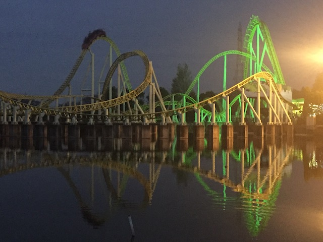
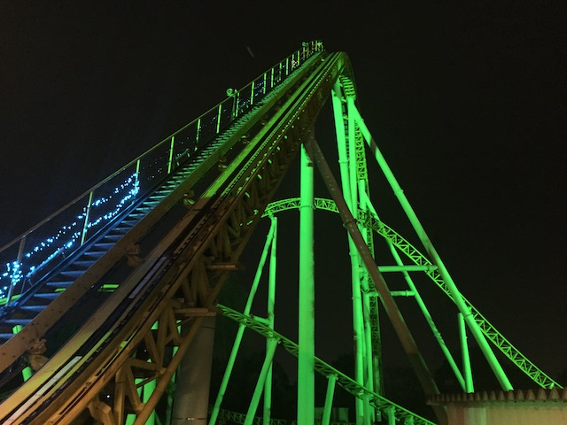
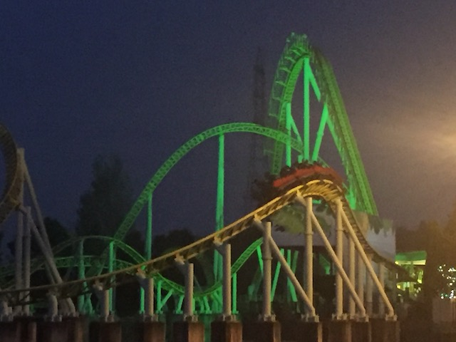
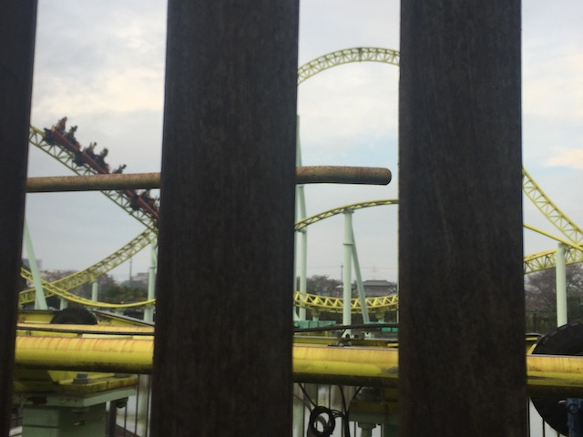
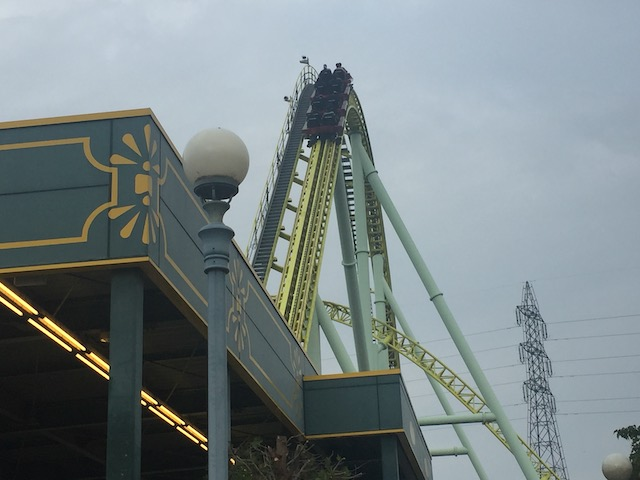
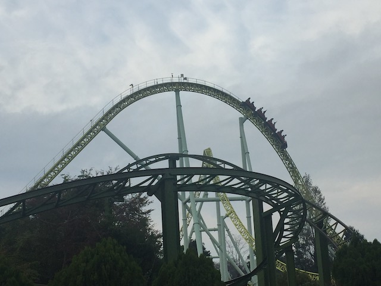
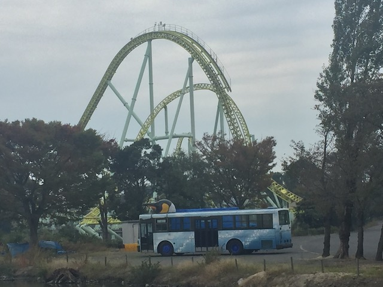

| |
Kawasemi Review

Today at Incrediblecoasters, we're going to be reviewing Kawasemi. The star attraction at Tobu Zoo and yep. It's an Intamin Mega-Lite. These things have been raved about by so many enthusiasts, and yeah. There's not much to say other than that these are amazing rides. If you're looking at it and wondering how a coaster this small can be so damn good, then start paying attention. Size isn't what makes a coaster great. Some of the best coasters are really small. But they pack a punch and create some of the strongest forces of any roller coaster. And the Mega-Lites are a perfect example of this. These rides may be tiny, but they have airtime as powerful as some of the best Intamin Hypers such as Superman: The Ride and Expedition Ge Force. So let's get riding and see all this crazy airtime for ourselves. We get in the cars, pull down the lap bars, and away we go. We head up the lifthill, and get a decent view of the rest of Tobu Zoo and the pond we're over. We've reached the top and are about to drop on down. We head down the first drop and gain some speed. Not a whole ton, but enough to enjoy it and really get going. We then head around a low to the ground turn that gives us some decent laterals. Reach on out and touch the water (Seriously though. Don't do that). =) We then head into a big hill that gives us a little bit of airtime and a little bit of laterals since it's kind of banked. Plus, then we bank to the left going down (we banked right going up). OK, the ride is fun. But at this point, you may be wondering "Is this really one of the best coasters ever? It's fun and all, having some good speed, laterals, and even some airtime. But is this really one of the best coasters ever?". Be quiet cynical rider. That was the weakest part of the ride. It truly gets crazy from here on out. We then head over another biggish airtime hill and...WHAM!!! RIGHT OUT OF OUR SEATS!!! The ejector air has begun. And it's f*cking STRONG on this ride. And spoiler alert, it's only going to get even better from here on out. We then head down the hill and go through another tight turn with some decent laterals in there. I like that. That's really cool. We then head into this...wave hill. I'm calling them wave hills. A wave hill is a hill that banks up in one direction, and then banks in the other direction coming down. And yeah. That wave hill has some good airtime and decent laterals as well. But just wait. Yeah. Everything is really small now. But this is where the ride really starts to get good. We then go into this tiny little wave hill. It's like...10 ft tall. Shouldn't be a big...WHOA!!! HOLY SH*T!!! WHAT THE F*CK WAS THAT!!? No seriously. That little wave hill is one of the strongest moments of ejector air on ANY coaster. And because it's a wave hill, you also get some laterals, and they are strong. It just snaps you to the other side while ejecting you out of your seat. It feels like that hill will break you. You then head into another little hill. EJECTOR AIR!!! And of course, another banked turn afterwards. And the laterals are even stronger right here. And of course, we head into another set of bunny hops. 3 to be exact. That's One. One time you fly out of your seat. Two. Two times you fly out of your seat. And three. Three times you fly out of your seat. And all that ejector air makes us happy. Really freaking happy. We then go through another low to the ground turn, but sadly, this one isn't as strong in laterals. But it's still great. And finally, we get one last bunny hop into the brake run. BAM!! EJECT OUT OF THE SEAT!!! AND INTO THE BRAKE RUN!!! Wow. For such a small little coaster, this thing packs a punch. I mean, this thing is STRONG!!! Hopefully you can see why other enthusiasts rave so much about Intamin Mega-Lites. It's a real shame that all these rides are in Eurasia cause one needs to be built in America, like right now. Seriously, you have to ride this if you're at Tobu Zoo. It is that good.
9/10
Location: Tobu Zoo
Opened: 2008
Built by: Intamin
Last Ridden: November 4, 2018
I have ridden this exact same ride at the following parks.
Djurs Sommerland
Kawasemi Photos








Home
|